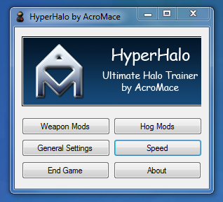
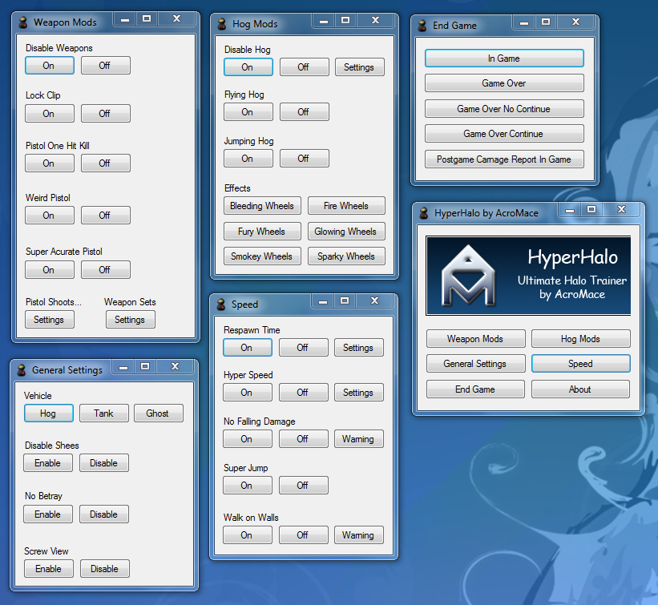
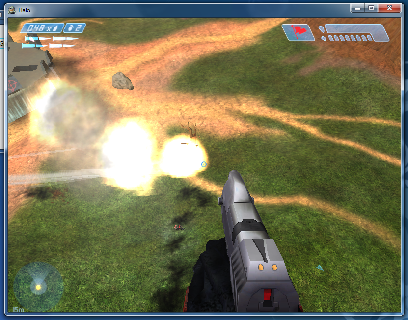
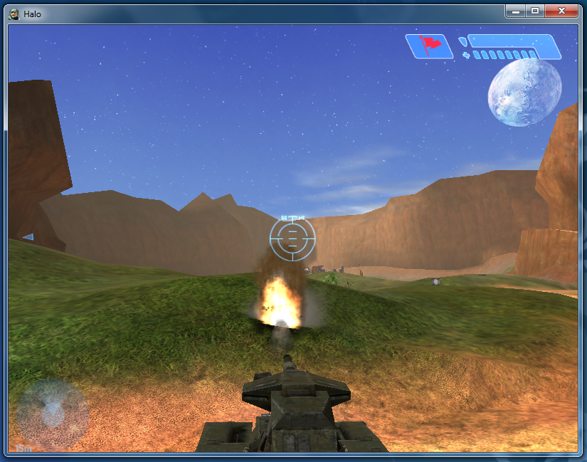
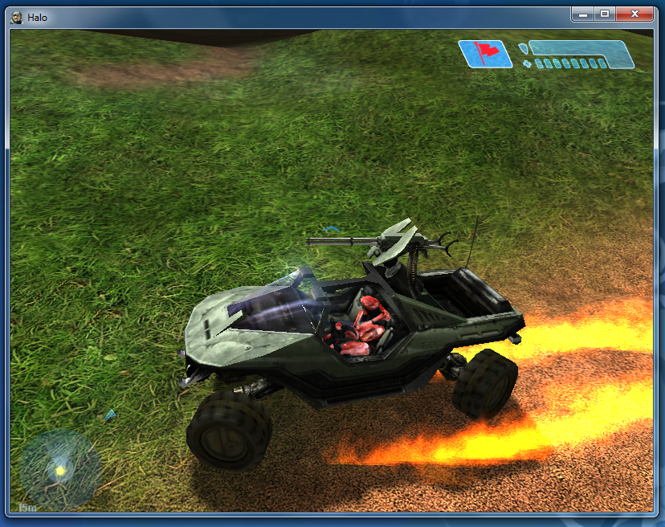

HyperHalo was my first major programming project. The program was created in Visual Basic 2008, and was my independent project for my Grade 9 Computer Science class.
When I took the course, all the computers in the lab had Halo Trial installed on it. Consequently, whenever there was free time at the end of class, there would always be a few LAN games up and running. Since the game was the trial version, it only came with one map, and I found that it got boring quickly. To spice it up, I used Cheat Engine to change a few values here and there, and the game would get completely ridiculous and a lot more fun.
But using Cheat Engine each time was rather tedious and inelegant, and I decided that I wanted to try making a trainer, a program that would change the functionality of a game with a simple interface. The only problem was that my programming knowledge was limited to basic C++ that I had learned in Grade 8. Since I had basically no experience in the area anyways, I chose Visual Basic because it was free, and the WYSIWYG interface appeared reasonably intuitive for someone who had never worked on a GUI before.
In respect to learning how to use Visual Basic itself, I followed a few tutorials I found while searching around to get a hang of the program. As the interface I was making was fairly simple, it did not take too long for me to get started on my project.
This is the result:
In hindsight, the only picture in the entire program doesn’t really depict anything useful for the user. The use of Comic Sans may have made more sense when I was in Grade 9. Regardless, the program was completely functional and otherwise tastefully presented:
As the name implies, the main feature of the program was the “Hyper Speed” feature which gave you a ridiculous momentum so that you could be flung across the map. Combined with pistol shooting rockets, instant respawn times, “Super Jump”, and no fall damage, the gameplay was similar to Tribes (which I hadn’t heard about back then).
The major problem with this setting was that the players’ locations were calculated by the client, and then synced with the server at a time interval. So if the person who was running the server had Hyper Speed on, and a client didn’t, the client would be warped to different locations as the client did not expect the increased speed, and thus would have a different position for the player than what the server calculated. There wasn’t really a way around this issue except for everyone in the server to run the program or to not use Hyper Speed at all.
Interestingly, spawning a vehicle that was not included in the trial version could also be used by the client.
Superficial changes such as flaming wheels only applied to the player running the program. Different players could have different effects running, and there would not be any problems.
Overall, I enjoyed having the opportunity to make something that ran outside of the console and solved a personal problem, and I was reasonably happy with the result. Perhaps more importantly, I really enjoyed playing with the program afterwards, and the exclamations of random students that had unwittingly joined our server made the effort all the more worthwhile.